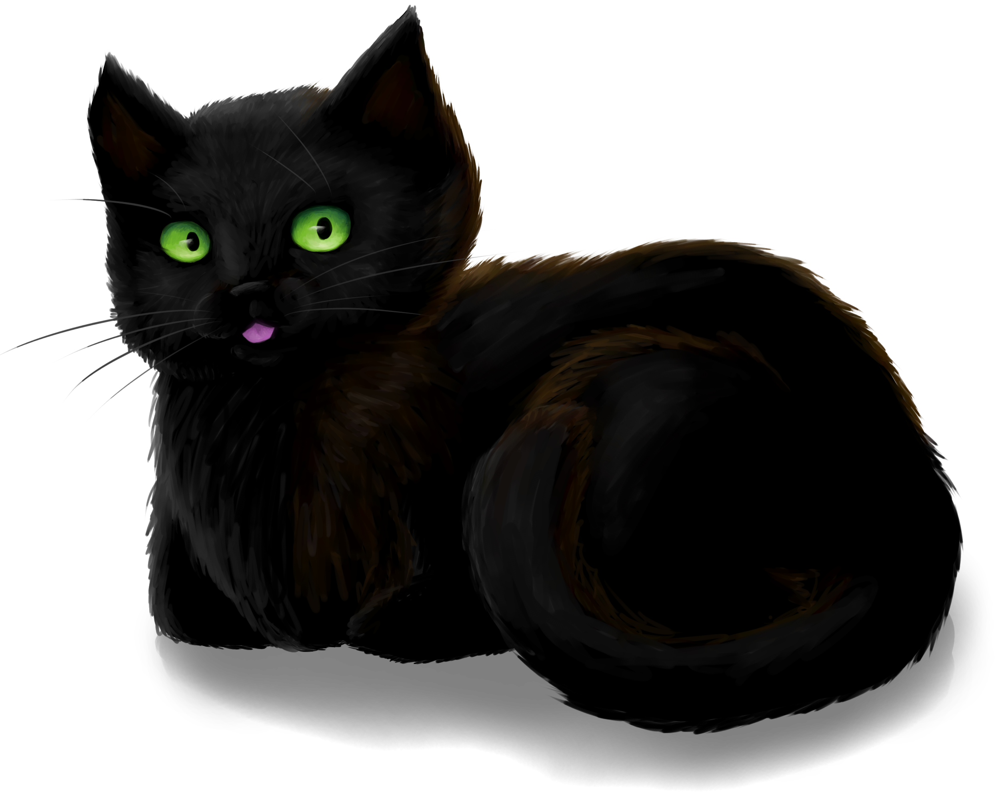

- Начална страница
Котка, лежаща на стълби
- Първа причина
Котка в кутия
- Втора причина
Човек, прегръщащ котка
- Трета причина
Котка, спяща на диван
- Четвърта причина
Котката и B12, но всъщност е снимка от играта
- Снимки от автора на този сайт
Сивата котка в горните леви ъгли на всяка страница